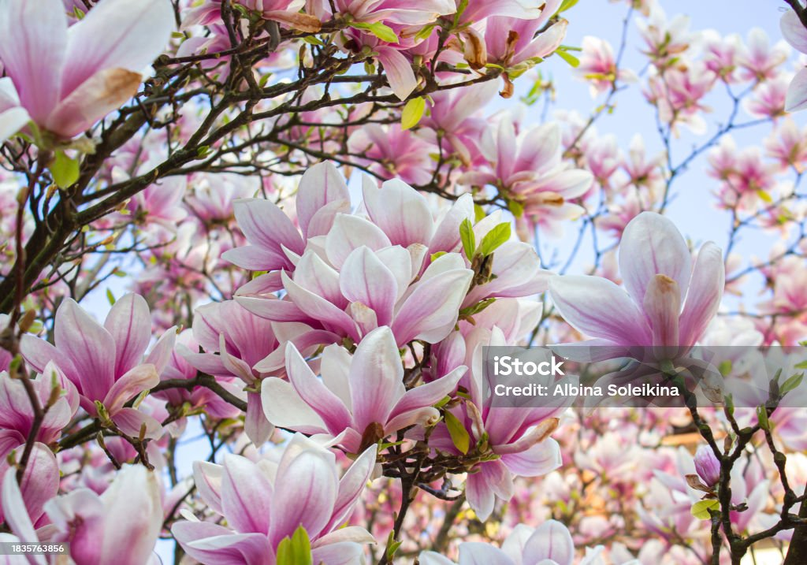
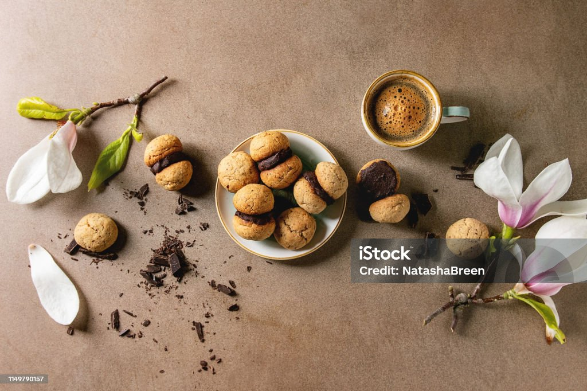

Flower of the Week: Magnolia
Magnolia trees are older than bees! The flowers have such large pistils because they were pollinated by much larger beetles rather than the bees we think of as pollinators today.
Foraging the act of searching for and gathering wild food sources like plants, fruits, fungi, and nuts, or other useful natural materials, often for survival, sustenance, or connecting with nature. Here, we celebrate flowers!

Here you can see the branch of a magnolia tree. Be sure to pick clean, undamaged flowers.They can be open and blossomed or closed up. The petals are edible at both stages!
Collect your flowers in a paper bag or basket to keep them fresh and prevent bruising on your way home.
Preparing is a critical step in ensuring we have safe, delicious, and enjoyable edible flowers.
After gathering your flowers, it's important to prepare them properly before consumption. Rinse them gently and pick out and damaged ones.
Inspect your specimens closely to ensure they've been correctly identified, use all of your senses to ensure there are no contaminants.
These include but are not limited to pesticides, dirt, and bugs.
Be sure to only use the petals, as the other parts of the flower may be bitter or cause abdominal discomfort.
Store your prepared petals in a paper bag in the refrigerator until you're ready to use them.
Inspect your specimens closely to ensure they've been correctly identified, use all of your senses to ensure there are no contaminants.
These include but are not limited to pesticides, dirt, and bugs.
Be sure to only use the petals, as the other parts of the flower may be bitter or cause abdominal discomfort.
Store your prepared petals in a paper bag in the refrigerator until you're ready to use them.
Cooking & Baking is a delightful way to enjoy edible flowers.

Follow the recipe here to prepare delicious magnolia flower cookies!Magnolia petals have a subtle ginger flavor, and they fit well into any gingersnap cookie recipe.
Here we have a hazelnut chocolate center added to the cookies. These cookies pair wonderfully with a fresh espresso or mushroom based coffee alternative.
Foraged Florals
12774 Petal Road
Sunshine, CA 95555
888-555-5555
12774 Petal Road
Sunshine, CA 95555
888-555-5555